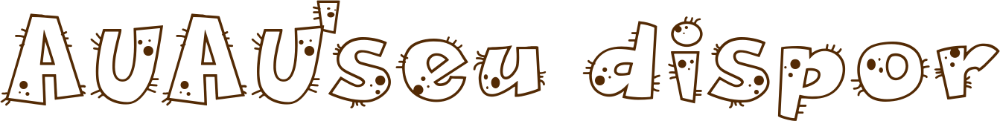

Descrição: O Projeto Medicina Veterinária de Abrigos auxilia ONGs a desempenharem seu trabalho cada vez melhor, fornecendo suporte técnico gratuito e realizado por uma equipe de médicos-veterinários especializados em Medicina Veterinária do Coletivo.
Ativismo: Veterinária popular, Auxilio com ração
Descrição:O objetivo de nosso programa é colaborar com a alimentação de cães e gatos de abrigos, protetores e ONGs, que desempenham um trabalho responsável e fundamental na vida desses pets..
Ativismo: Auxilio com ração, data marcada para receber ração
Descrição:Doar ração é uma das coisas mais importantes, se não a mais importante, para alguém que não tem um cãozinho em casa fazer. No entanto, mesmo que você já tenha o seu melhor amigo para cuidar, ainda assim, você deveria considerar essa alternativa.
Ativismo: Auxilio com doação de ração